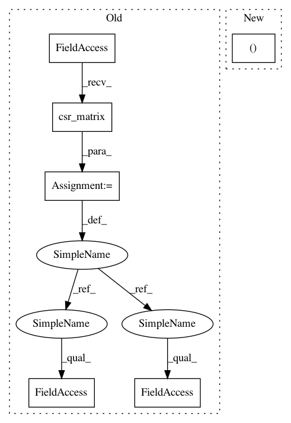

466ef0befceaad2be3244efd724c76c90869b17d,tensorrec/eval.py,,ndcg_at_k,#Any#Any#Any#Any#Any#Any#,69
Before Change
item_features=item_features)
positive_test_interactions = test_interactions > 0
ranks_of_relevant = sp.csr_matrix(predicted_ranks *
positive_test_interactions.A)
relevance = sp.csr_matrix(
test_interactions.A *
positive_test_interactions.A
)
k_mask = np.less(ranks_of_relevant.data, k + 1)
ror_at_k = np.maximum(np.multiply(ranks_of_relevant.data, k_mask), 1)
relevance_at_k = (2**np.multiply(relevance.data, k_mask)) - 1
ranks_of_relevant.data = relevance_at_k/np.log2(ror_at_k + 1) // ranks at 1
After Change
predicted_ranks = model.predict_rank(user_features=user_features,
item_features=item_features)
relevance, k_mask, ranks_of_relevant, ror_at_k = _setup_ndcg(predicted_ranks,
test_interactions,
k)
In pattern: SUPERPATTERN
Frequency: 3
Non-data size: 6
Instances
Project Name: jfkirk/tensorrec
Commit Name: 466ef0befceaad2be3244efd724c76c90869b17d
Time: 2018-03-02
Author: jcauterucciojr@gmail.com
File Name: tensorrec/eval.py
Class Name:
Method Name: ndcg_at_k
Project Name: RaRe-Technologies/gensim
Commit Name: a31eab99dfbc6dcb7fe2ef149c59a30910adbbbd
Time: 2011-05-15
Author: radimrehurek@seznam.cz
File Name: src/gensim/similarities/docsim.py
Class Name: SparseMatrixSimilarity
Method Name: getSimilarities
Project Name: jfkirk/tensorrec
Commit Name: 466ef0befceaad2be3244efd724c76c90869b17d
Time: 2018-03-02
Author: jcauterucciojr@gmail.com
File Name: tensorrec/eval.py
Class Name:
Method Name: ndcg_at_k
Project Name: jfkirk/tensorrec
Commit Name: ac35acad4f4311aef39aea039902cd01775eb70e
Time: 2018-03-01
Author: jcauterucciojr@gmail.com
File Name: tensorrec/eval.py
Class Name:
Method Name: ndcg_at_k